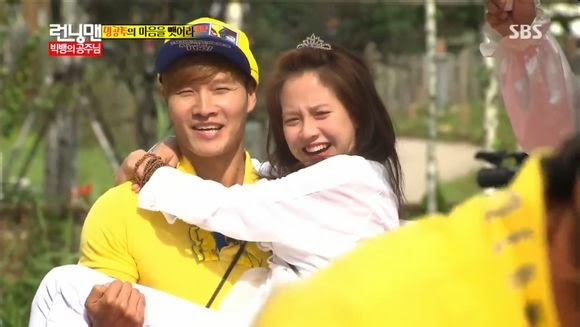
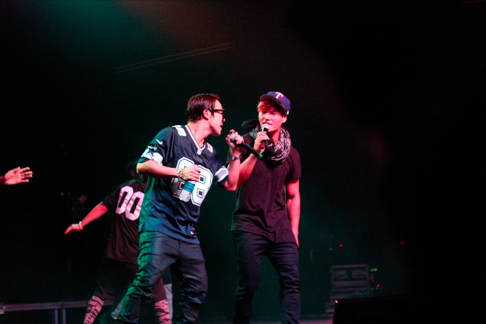
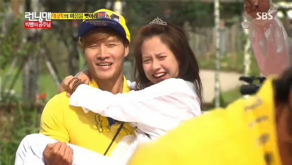
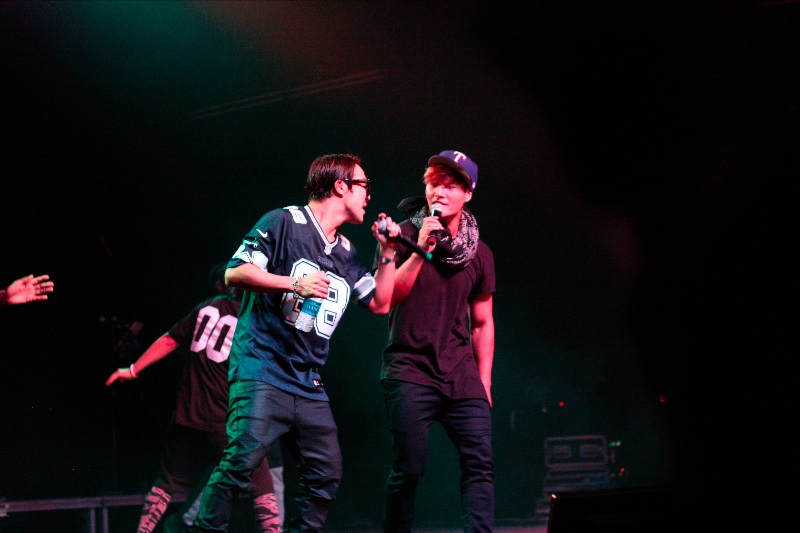

Kim Jong-kook first entered the Korean music industry in 1995 as a member of the duo, Turbo, which became immensely popular for their catchy music. After the duo disbanded a few years later, he became a solo singer in 2001, mostly concentrating on ballads
Kim Jong-kook had a setback after Turbo as he faced difficulties settling down as a solo artist. Problems like lack of songs from composers, less support from his respected agency, and also a change of taste within the fans caused his first album as a solo artist to fail. However, he made a successful comeback with his second album Evolution in 2004, which spawned the hit single "One Man". Kim then became a permanent cast member of the popular variety game show, X-Man, which further raised his popularity.
In 2005, Kim released his third album, This Is Me. The album sold over 300,000 copies and became one of the best-selling albums in Korea that year.The lead single, "Lovable" topped various music charts, and was included in online games such as Pump It Up and Audition Online. Kim swept the Daesang (Artist of the Year) Award from all three major Korean TV stations, SBS, KBS, and MBC, becoming the second artist to accomplish this feat since Cho Yong-pil in the 1980s.
Kim was made the leader of the first series of Shootdori, where kids who are interested in soccer form teams and compete. However, he had to leave the team after receiving an enlistment notice. He wrote and sang a song for his team, titled "Toward a Dream". Kim enlisted in March 2006. Around that time, he released his 4th album, Volume 4 - Kim Jong-kook's Fourth Letter. The music video of the lead single, Saying I Love You, featured Yoon Eun-hye, who was previously involved in a love-line with him in X-Man. Though Kim was unable to directly promote the album as he was in the military, the album sold more than 100,000 copies and later won "Album of the Year" at the Melon Music Awards.
It was announced in late April 2008 that the singer would end his military service on May 23, 2008. On that day, he was greeted by fans, and during an interview, he said that he was "relieved". His fifth studio album, Here I Am, was released on October 22, 2008, with songs such as "Today More than Yesterday" and "Thank You".
Kim also returned to television, becoming a permanent member of reality-variety show Family Outing since episode 19, part of SBS's Good Sunday lineup. Family Outing has become one of the top-rated shows in Korea, consistently achieving the highest ratings for the Sunday mid-afternoon time-slot, and has gained online popularity among Hallyu fans.
His sixth album, titled The Eleventh Story was released on January 27, 2010. The album featured the singles "This is the Person" and "Don't Be Good to Me". The music video of the latter single featured fellow Family Outing cast member Park Ye-jin.
In 2010, Kim became a cast member of SBS' variety show Running Man. In 2011, he won the "Best TV Star Award" at the SBS Entertainment Awards. Kim gained pan-Asia popularity from the show, becoming one of the most searched Korean stars in Singapore, and having his showcase there sold out with more than 1,700 fans in attendance. He also enjoyed success in China, where he consistently topped polls such as being voted #1 Korean singer on the Chinese streaming website, Tudou, and being ranked second most popular Korean male celebrity on Baidu.
On November 1, 2012, following a pre-release of selected songs from his new album, Kim made a comeback to the music scene with the release of his seventh studio album, Journey Home, after three years. His fellow Running Man co-stars Haha and Gary participated in the album as well as former Running Man member Song Joong-ki, who starred in the music video for lead single "Men Are All Like That". The same year, he began to host the documentary program Crisis Escape No. 1, which won him the "Best Entertainer Award" at the 2013 KBS Entertainment Awards.
In 2014, he formed a duo with fellow Running Man cast member Haha, known as Running Man Brothers. The musical duo held a concert tour in the United States in July and December.
 


